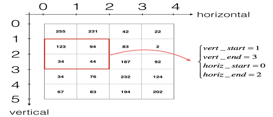

Introduction
Object Detection
Object detection is the process of finding instances of real-world objects such as faces, bicycles, and buildings in images or videos. Object detection algorithms typically use extracted features and learning algorithms to recognize instances of an object category. It is commonly used in applications such as image retrieval, security, surveillance, and advanced driver assistance systems (ADAS).Object detection is a domain that has benefited immensely from the recent developments in deep learning. Recent years have seen people develop many algorithms for object detection, some of which include YOLO, SSD, Mask RCNN and RetinaNet. We are Predicting the class of object as well as a rectangle (called bounding box) containing that object. It takes 4 variables to uniquely identify a rectangle. So, for each instance of the object in the image, we shall predict following variables:
1. Bounding box top left x coordinate
2. Bounding box top left y coordinate,
3. Bounding box width,
4. Bounding box height
1. Object Detection using Hog Features:
Hog features are computationally inexpensive and are good for many real-world problems. On each window obtained from running the sliding window on the pyramid, we calculate Hog Features which are fed to an SVM (Support vector machine) to create classifiers. We were able to run this in real time on videos for pedestrian detection, face detection, and so many other object detection use-cases.
2. R-CNN
Quickly after Over Feat, Regions with CNN features or R-CNN from Ross Girshick, et al. at the UC Berkeley was published which boasted an almost 50% improvement on the object detection challenge. What they proposed was a three stage approach: Extract possible objects using a region proposal method (the most popular one being Selective Search). Extract features from each region using a CNN. Classify each region with SVMs.R-CNN Architecture While it achieved great results, the training had lots of problems. To train it you first had to generate proposals for the training dataset, apply the CNN feature extraction to every single one (which usually takes over 200GB for the Pascal 2012 train dataset) and then finally train the SVM classifiers.

3. Fast R-CNN
This approach quickly evolved into a purer deep learning one, when a year later Ross Girshick (now at Microsoft Research) published Fast R-CNN. Similar to R-CNN, it used Selective Search to generate object proposals, but instead of extracting all of them independently and using SVM classifiers, it applied the CNN on the complete image and then used both Region of Interest (RoI) Pooling on the feature map with a final feed forward network for classification and regression. Not only was this approach faster, but having the RoI Pooling layer and the fully connected layers allowed the model to be end-to-end differentiable and easier to train. The biggest downside was that the model still relied on Selective Search (or any other region proposal algorithm), which became the bottleneck when using it for inference.5. Faster R-CNN Subsequently, Faster R-CNN authored by Shaoqing Ren (also co-authored by Girshick, now at Facebook Research), the third iteration of the R-CNN series. Faster R-CNN added what they called a Region Proposal Network (RPN), in an attempt to get rid of the Selective Search algorithm and make the model completely trainable end-to-end. We won’t go into details on what the RPNs does, but in abstract it has the task to output objects based on an “objectness” score. These objects are used by the RoI Pooling and fully connected layers for classification. We will go into much more detail in a subsequent post where we will discuss the architecture in detail.6. YOLO Shortly after that, You Only Look Once: Unified, Real-Time Object Detection(YOLO) paper published by Joseph Redmon (with Girshick appearing as one of the co-authors). YOLO proposed a simple convolutional neural network approach which has both great results and high speed, allowing for the first time real time object detection.
4. Faster R-CNN
This approach quickly evolved into a purer deep learning one, when a year later Ross Girshick (now at Microsoft Research) published Fast R-CNN. Similar to R-CNN, it used Selective Search to generate object proposals, but instead of extracting all of them independently and using SVM classifiers, it applied the CNN on the complete image and then used both Region of Interest (RoI) Pooling on the feature map with a final feed forward network for classification and regression. Not only was this approach faster, but having the RoI Pooling layer and the fully connected layers allowed the model to be end-to-end differentiable and easier to train. The biggest downside was that the model still relied on Selective Search (or any other region proposal algorithm), which became the bottleneck when using it for inference.
5. YOLO
Shortly after that, You Only Look Once: Unified, Real-Time Object Detection(YOLO) paper published by Joseph Redmon (with Girshick appearing as one of the co-authors). YOLO proposed a simple convolutional neural network approach which has both great results and high speed, allowing for the first time real time object detection.
Technology
What is YOLO?
YOLO stands for You Only Look Once. It’s an object detector that uses features learned by a deep convolutional neural network to detect an object. Before we get out hands dirty with code, we must understand how YOLO works. There are currently three versions of it- YOLO v1 , YOLO v2 and YOLO v3. YOLOv1 was first introduced in 2015. It was an important work as the model could process images in real-time at 45 frames per second- which was amazing compared to other object detection methods at that time. YOLOv1 performed a lot faster compared to the other methods. But, it’s detections suffered by ~10 mAP compared to Faster R-CNN VGG-16. This was one of the motive behind the 2nd version of YOLO, which was introduced in late 2016. YOLOv2 outperforms all the other methods in both speed and detection. At 67 FPS, YOLOv2 gets 76.8 mAP.
Why is it better than YOLOv1 ?
YOLO suffers from a variety of shortcomings relative to state-of-the-art detection systems. Error analysis of YOLO compared to Fast R-CNN shows that YOLO makes a significant number of localization errors. Furthermore, YOLO has relatively low recall compared to region proposal-based methods. Thus we focus mainly on improving recall and localization while maintaining classification accuracy. Computer vision generally trends towards larger, deeper networks. Better performance often hinges on training larger networks or ensembling multiple models together. However, with YOLOv2 we want a more accurate detector that is still fast. Instead of scaling up our network,we simplify the network and then make the representation easier to learn. We pool a variety of ideas from past work with our own novel concepts to improve YOLO’s performance.
Batch normalization
Add batch normalization in convolution layers. This removes the need for dropouts and pushes mAP up 2%.
High-resolution classifier
The YOLO training composes of 2 phases. First, we train a classifier network like VGG16. Then we replace the fully connected layers with a convolution layer and retrain it end-to-end for the object detection. YOLO trains the classifier with 224 × 224 pictures followed by 448 × 448 pictures for the object detection. YOLOv2 starts with 224 × 224 pictures for the classifier training but then retune the classifier again with 448 × 448 pictures using much fewer epochs. This makes the detector training easier and moves mAP up by 4%.
Convolutional with Anchor Boxes
As indicated in the YOLO paper, the early training is susceptible to unstable gradients. Initially, YOHO makes arbitrary guesses on the boundary boxes. These guesses may work well for some objects but badly for others resulting in steep gradient changes. In early training, predictions are fighting with each other on what shapes to specialize on.
Dimension Clusters
In many problem domains, the boundary boxes have strong patterns. For example, in the autonomous driving, the 2 most common boundary boxes will be cars and pedestrians at different distances. To identify the top-K boundary boxes that have the best coverage for the training data, we run K-means clustering on the training data to locate the centroids of the top-K clusters.
Design
Designing phase in the object detection are: Convolutional Neural Networks A convolution layer transforms an input volume into an output volume of different size, as shown below.
In this part, you will build every step of the convolution layer. You will first implement two helper functions: one for zero padding and the other for computing the convolution function itself.
Single step of convolution In this part, implement a single step of convolution, in which you apply the filter to a single position of the input. This will be used to build a convolutional unit, which:
1. Takes an input volume
2. Applies a filter at every position of the input
3. Outputs another volume (usually of different size)
In a computer vision application, each value in the matrix on the left corresponds to a single pixel value, and we convolve a 3x3 filter with the image by multiplying its values element-wise with the original matrix, then summing them up and adding a bias. In this first step of the exercise, you will implement a single step of convolution, corresponding to applying a filter to just one of the positions to get a single real-valued output.
Convolutional Neural Networks - Forward pass
In the forward pass, you will take many filters and convolve them on the input. Each 'convolution' gives you a 2D matrix output. You will then stack these outputs to get a 3D volume:

Pooling layer
The pooling (POOL) layer reduces the height and width of the input. It helps reduce computation, as well as helps make feature detectors more invariant to its position in the input. The two types of pooling layers are: Max-pooling layer: slides and (f,ff,f) window over the input and stores the max value of the window in the output. Average-pooling layer: slides and (f,ff,f) window over the input and stores the average value of the window in the output .These pooling layers have no parameters for backpropagation to train. However, they have hyperparameters such as the window size ff. This specifies the height and width of the fxf window you would compute a max or average over.
1. Backpropagation
Backpropagation, short for "backward propagation of errors," is an algorithm for supervised learning of artificial neural networks using gradient descent. Given an artificial neural network and an error function, the method calculates the gradient of the error function with respect to the neural network's weights. It is a generalization of the delta rule for perceptrons to multilayer feedforward neural networks. The "backwards" part of the name stems from the fact that calculation of the gradient proceeds backwards through the network, with the gradient of the final layer of weights being calculated first and the gradient of the first layer of weights being calculated last. Partial computations of the gradient from one layer are reused in the computation of the gradient for the previous layer. This backwards flow of the error information allows for efficient computation of the gradient at each layer versus the naive approach of calculating the gradient of each layer separately. Backpropagation's popularity has experienced a recent resurgence given the widespread adoption of deep neural networks for image recognition and speech recognition. It is considered an efficient algorithm, and modern implementations take advantage of specialized GPUs to further improve performance.
2.Transfer Learning
This area of research bears some relation to the long history of psychological literature on transfer of learning, although formal ties between the two fields are limited. In 1997, the journal Machine Learning published a special issue devoted to transfer learning and by 1998, the field had advanced to include multi-task learning, along with a more formal analysis of its theoretical foundations. Learning to Learn, edited by Pratt and Sebastian Thrun, is a 2012 review of the subject.Transfer learning has also been applied in cognitive science, with the journal Connection Science publishing a special issue on reuse of neural networks through transfer in 1996. Notably, scientists have developed algorithms for transfer learning in Markov logic networks and Bayesian networks. Researchers have also applied techniques for transfer to problems in text classification, and spam filtering.
MODEL DETAILS
First things to know:
1. The input is a batch of images of shape (m, 608, 608, 3)
2. The output is a list of bounding boxes along with the recognized classes. Each bounding box is represented by 6 numbers (pc,bx,by,bh,bw,c)(pc,bx,by,bh,bw,c). If we expand cc into an 80-dimensional vector, each bounding box is then represented by 85 numbers. Pooling layer
The pooling (POOL) layer reduces the height and width of the input. It helps reduce computation, as well as helps make feature detectors more invariant to its position in the input. The two types of pooling layers are: Max-pooling layer: slides and (f,ff,f) window over the input and stores the max value of the window in the output. Average-pooling layer: slides and (f,ff,f) window over the input and stores the average value of the window in the output.
If the center/midpoint of an object falls into a grid cell, that grid cell is responsible for detecting that object. Since we are using 5 anchor boxes, each of the 19 x19 cells thus encodes information about 5 boxes. Anchor boxes are defined only by their width and height. For simplicity, we will flatten the last two last dimensions of the shape (19, 19, 5, 85) encoding. So the output of the Deep CNN is (19, 19, 425).
Here's one way to visualize what YOLO is predicting on an image: For each of the 19x19 grid cells, find the maximum of the probability scores (taking a max across both the 5 anchor boxes and across different classes). Color that grid cell according to what object that grid cell considers the most likely.